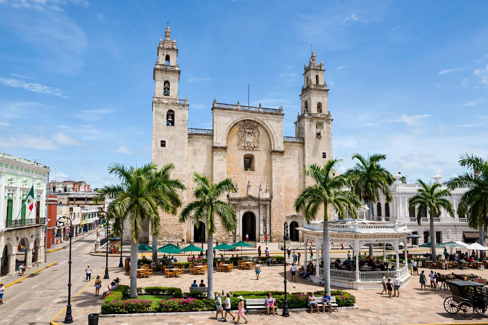

| Country | Mexico |
|---|---|
| State | Yucatán |
| Founded | 6 January 1542, by Francisco de Montejo the Younger |
| Population | 921,771 (city, 2020); about 1.3 million (metro) |
| Nickname | La Ciudad Blanca ("The White City") |
Mérida is the capital and largest city of the Mexican state of Yucatán, and the largest city of the Yucatán Peninsula. Founded in 1542 by the Spanish conquistador Francisco de Montejo the Younger on the site of the Maya city of T'hó, it was named after Mérida in Extremadura, Spain. The city is renowned for its colonial architecture, rich Maya and Spanish cultural heritage, and its reputation as one of the safest large cities in Mexico.

The Spanish built Mérida atop the Maya city of T'hó (Ichkaan Siijó), one of whose pyramids supplied stone for the cathedral of San Ildefonso, completed in 1598 — the oldest cathedral on the mainland of the Americas. During the colonial period the city was walled against Maya revolts. In the late 19th and early 20th centuries, Mérida grew rich on the henequen (sisal) boom, which financed the mansions of the Paseo de Montejo boulevard; at one time the city claimed more millionaires per capita than almost anywhere in the world. The Caste War of Yucatán (1847–1901) saw Maya rebels nearly take the city in 1848.
Landmarks include the Plaza Grande, the Casa Montejo, the Palacio de Gobierno with murals by Fernando Castro Pacheco, and the Gran Museo del Mundo Maya (opened 2012). Mérida was named American Capital of Culture in 2000 and 2017. Its weekly calendar of free public events — including Vaquería Mondays with traditional jarana dancing and the Sunday "Mérida en Domingo" street festival — reflects the city's strong Yucatecan identity, cuisine (cochinita pibil, sopa de lima, panuchos), and Maya-language heritage.